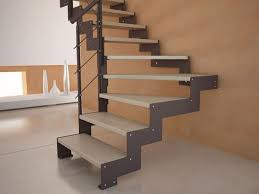
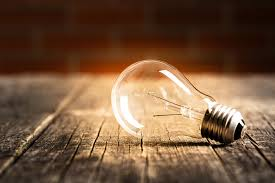
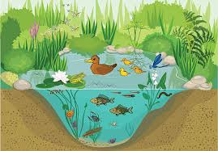
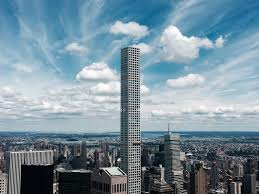

Introducción:
En esta página encontraremos las palabras más comunes para la letra E
-
Elefante: Mamífero paquidermo de gran tamaño, con cabeza grande, orejas muy desarrolladas y una larga trompa que utiliza como órgano táctil y prensil, y dos colmillos de marfil. Habita en África y Asia.

- Escalera: Conjunto de peldaños o escalones que enlazan dos planos a distinto nivel en una construcción o terreno, y que sirven para subir y bajar. Usado también en plural con el mismo significado que en singular. 
- Energía: Capacidad para realizar un trabajo o producir un cambio en un sistema físico. Se presenta en diversas formas, como la energía cinética, potencial, térmica, eléctrica, química, nuclear, entre otras. 
- Ecosistema: Comunidad de organismos vivos que interactúan entre sí y con su entorno físico en un área determinada, formando un sistema equilibrado y funcional. 
- Edificio: Construcción fija, hecha con materiales resistentes, que tiene paredes y techo, y que se utiliza para diversos fines, como vivienda, trabajo, almacenamiento, entre otros. 